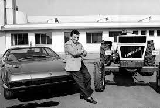
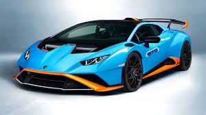

Resultado de imagen para historia lamborghini Databa del año 1963 en el cual una pequeña y primera fábrica en la localidad de Santa Ágata (a sólo 25KM de Bolonia) le permitiría dar a luz a su primer proyecto de coche Lamborghini, el 350 GTV, que daría comienzo a una etapa de progresión en la creación con su heredero el 350GT del cual se fabricaron 120 Unidades..
